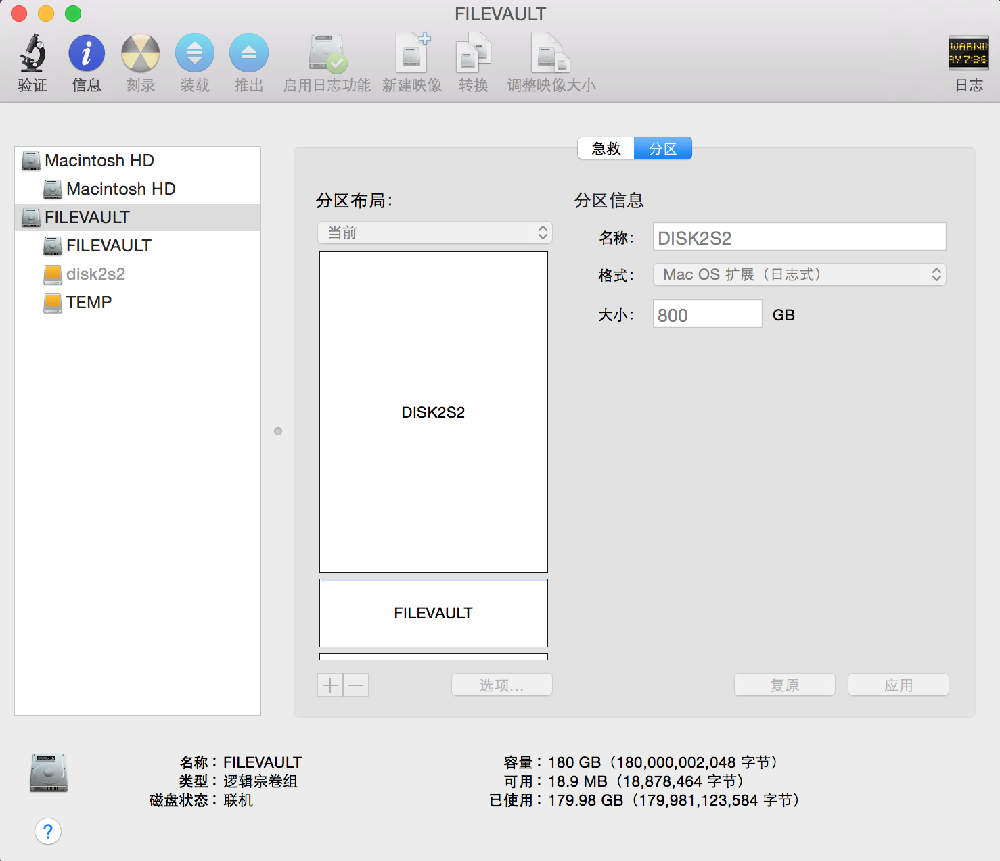

<!DOCTYPE html>
<html>
<head><meta name="generator" content="Hexo 3.9.0">
    <meta charset="utf-8">

    

    
    <title>MAC PC Linux多平台移动硬盘加密方案 | 无聊小博</title>
    
    <meta name="viewport" content="width=device-width, initial-scale=1, maximum-scale=1">
    
        <meta name="keywords" content="MAC,PC,Linux,移动硬盘,bitlocker,hfs,ext4,hfs for Windows,progon,M3 bitlocker loader">
    
    <meta name="description" content="文章更新 20160520-添加了我的解决方法  为什么会有这篇文章本来我一直在Windows下用NTFS格式，然后配合使用系统自带的Bitlocker进行加密挺方便的，无奈，这一切在入手第一台MBP之后彻底改变了。MAC下默认的是HFS+格式，而Windows下则是NTFS格式（这里就暂时不说FAT和FAT32了，年代太久远了，个人觉得用的人不会太多）。">
<meta name="keywords" content="MAC,PC,Linux,移动硬盘,bitlocker,hfs,ext4,hfs for Windows,progon,M3 bitlocker loader">
<meta property="og:type" content="article">
<meta property="og:title" content="MAC PC Linux多平台移动硬盘加密方案">
<meta property="og:url" content="http://www.wuliaole.com/post/portable_harddisk_encryption_method_on_mac_pc_and_Linux/index.html">
<meta property="og:site_name" content="无聊小博">
<meta property="og:description" content="文章更新 20160520-添加了我的解决方法  为什么会有这篇文章本来我一直在Windows下用NTFS格式，然后配合使用系统自带的Bitlocker进行加密挺方便的，无奈，这一切在入手第一台MBP之后彻底改变了。MAC下默认的是HFS+格式，而Windows下则是NTFS格式（这里就暂时不说FAT和FAT32了，年代太久远了，个人觉得用的人不会太多）。">
<meta property="og:locale" content="zh-Hans">
<meta property="og:image" content="http://www.wuliaole.com/post/portable_harddisk_encryption_method_on_mac_pc_and_Linux/disktool.png">
<meta property="og:updated_time" content="2018-10-11T15:31:02.000Z">
<meta name="twitter:card" content="summary">
<meta name="twitter:title" content="MAC PC Linux多平台移动硬盘加密方案">
<meta name="twitter:description" content="文章更新 20160520-添加了我的解决方法  为什么会有这篇文章本来我一直在Windows下用NTFS格式，然后配合使用系统自带的Bitlocker进行加密挺方便的，无奈，这一切在入手第一台MBP之后彻底改变了。MAC下默认的是HFS+格式，而Windows下则是NTFS格式（这里就暂时不说FAT和FAT32了，年代太久远了，个人觉得用的人不会太多）。">
<meta name="twitter:image" content="http://www.wuliaole.com/post/portable_harddisk_encryption_method_on_mac_pc_and_Linux/disktool.png">
    

    
        <link rel="alternate" href="/" title="无聊小博" type="application/atom+xml">
    

    

    <link rel="stylesheet" href="/libs/font-awesome/css/font-awesome.min.css">
    <link rel="stylesheet" href="/libs/titillium-web/styles.css">
    <link rel="stylesheet" href="/libs/source-code-pro/styles.css">

    <link rel="stylesheet" href="/css/style.css">

    <script src="/libs/jquery/3.3.1/jquery.min.js"></script>
    
    
        <link rel="stylesheet" href="/libs/lightgallery/css/lightgallery.min.css">
    
    
        <link rel="stylesheet" href="/libs/justified-gallery/justifiedGallery.min.css">
    
    
        <script type="text/javascript">
(function(i,s,o,g,r,a,m) {i['GoogleAnalyticsObject']=r;i[r]=i[r]||function() {
(i[r].q=i[r].q||[]).push(arguments)},i[r].l=1*new Date();a=s.createElement(o),
m=s.getElementsByTagName(o)[0];a.async=1;a.src=g;m.parentNode.insertBefore(a,m)
})(window,document,'script','//www.google-analytics.com/analytics.js','ga');

ga('create', 'UA-144170558-1', 'auto');
ga('send', 'pageview');

</script>

    
    
        <script>
var _hmt = _hmt || [];
(function() {
  var hm = document.createElement("script");
  hm.src = "//hm.baidu.com/hm.js?0b9af06e21a88c60dc3deb5b699a3e63";
  var s = document.getElementsByTagName("script")[0];
  s.parentNode.insertBefore(hm, s);
})();
</script>

    


</head>
</html>
<body>
    <div id="wrap">
        <header id="header">
    <div id="header-outer" class="outer">
        <div class="container">
            <div class="container-inner">
                <div id="header-title">
                    <h1 class="logo-wrap">
                        <a href="/" class="logo"></a>
                    </h1>
                    
                        <h2 class="subtitle-wrap">
                            <p class="subtitle">Keep sharp</p>
                        </h2>
                    
                </div>
                <div id="header-inner" class="nav-container">
                    <a id="main-nav-toggle" class="nav-icon fa fa-bars"></a>
                    <div class="nav-container-inner">
                        <ul id="main-nav">
                            
                                <li class="main-nav-list-item" >
                                    <a class="main-nav-list-link" href="/">Inici</a>
                                </li>
                            
                                        <ul class="main-nav-list"><li class="main-nav-list-item"><a class="main-nav-list-link" href="/categories/CentOS/">CentOS</a></li><li class="main-nav-list-item"><a class="main-nav-list-link" href="/categories/Hexo/">Hexo</a><ul class="main-nav-list-child"><li class="main-nav-list-item"><a class="main-nav-list-link" href="/categories/Hexo/基础/">基础</a></li></ul></li><li class="main-nav-list-item"><a class="main-nav-list-link" href="/categories/Linux/">Linux</a></li><li class="main-nav-list-item"><a class="main-nav-list-link" href="/categories/MacOS/">MacOS</a></li><li class="main-nav-list-item"><a class="main-nav-list-link" href="/categories/折腾/">折腾</a></li><li class="main-nav-list-item"><a class="main-nav-list-link" href="/categories/效率/">效率</a></li><li class="main-nav-list-item"><a class="main-nav-list-link" href="/categories/日常使用/">日常使用</a></li><li class="main-nav-list-item"><a class="main-nav-list-link" href="/categories/raspberry/">树莓派</a><ul class="main-nav-list-child"><li class="main-nav-list-item"><a class="main-nav-list-link" href="/categories/raspberry/入门/">入门</a></li></ul></li><li class="main-nav-list-item"><a class="main-nav-list-link" href="/categories/编程/">编程</a></li></ul>
                                    
                                <li class="main-nav-list-item" >
                                    <a class="main-nav-list-link" href="/about/index.html">Quant a</a>
                                </li>
                            
                        </ul>
                        <nav id="sub-nav">
                            <div id="search-form-wrap">

    <form class="search-form">
        <input type="text" class="ins-search-input search-form-input" placeholder="Cercar" />
        <button type="submit" class="search-form-submit"></button>
    </form>
    <div class="ins-search">
    <div class="ins-search-mask"></div>
    <div class="ins-search-container">
        <div class="ins-input-wrapper">
            <input type="text" class="ins-search-input" placeholder="Type something..." />
            <span class="ins-close ins-selectable"><i class="fa fa-times-circle"></i></span>
        </div>
        <div class="ins-section-wrapper">
            <div class="ins-section-container"></div>
        </div>
    </div>
</div>
<script>
(function (window) {
    var INSIGHT_CONFIG = {
        TRANSLATION: {
            POSTS: 'Posts',
            PAGES: 'Pages',
            CATEGORIES: 'categories',
            TAGS: 'etiquetes',
            UNTITLED: '(Untitled)',
        },
        ROOT_URL: '/',
        CONTENT_URL: '/content.json',
    };
    window.INSIGHT_CONFIG = INSIGHT_CONFIG;
})(window);
</script>
<script src="/js/insight.js"></script>

</div>
                        </nav>
                    </div>
                </div>
            </div>
        </div>
    </div>
</header>
        <div class="container">
            <div class="main-body container-inner">
                <div class="main-body-inner">
                    <section id="main">
                        <div class="main-body-header">
    <h1 class="header">
    
    <a class="page-title-link" href="/categories/折腾/">折腾</a>
    </h1>
</div>

                        <div class="main-body-content">
                            <article id="post-20160506-mac-pc-linux多平台移动硬盘加密方案" class="article article-single article-type-post" itemscope itemprop="blogPost">
    <div class="article-inner">
        
            <header class="article-header">
                
    
        <h1 class="article-title" itemprop="name">
        MAC PC Linux多平台移动硬盘加密方案
        </h1>
    

            </header>
        
        
            <div class="article-meta">
                
    <div class="article-date">
        <a href="/post/portable_harddisk_encryption_method_on_mac_pc_and_Linux/" class="article-date">
            <time datetime="2016-05-06T10:43:34.000Z" itemprop="datePublished">2016-05-06</time>
        </a>
    </div>

		

                
    <div class="article-tag">
        <i class="fa fa-tag"></i>
        <a class="tag-link" href="/tags/Linux/">Linux</a>, <a class="tag-link" href="/tags/M3-bitlocker-loader/">M3 bitlocker loader</a>, <a class="tag-link" href="/tags/MAC/">MAC</a>, <a class="tag-link" href="/tags/PC/">PC</a>, <a class="tag-link" href="/tags/bitlocker/">bitlocker</a>, <a class="tag-link" href="/tags/ext4/">ext4</a>, <a class="tag-link" href="/tags/hfs/">hfs</a>, <a class="tag-link" href="/tags/hfs-for-Windows/">hfs for Windows</a>, <a class="tag-link" href="/tags/progon/">progon</a>, <a class="tag-link" href="/tags/移动硬盘/">移动硬盘</a>
    </div>

            </div>
        
        
        <div class="article-entry" itemprop="articleBody">
            <h2 id="文章更新"><a href="#文章更新" class="headerlink" title="文章更新"></a>文章更新</h2><ol>
<li>20160520-添加了我的解决方法</li>
</ol>
<h2 id="为什么会有这篇文章"><a href="#为什么会有这篇文章" class="headerlink" title="为什么会有这篇文章"></a>为什么会有这篇文章</h2><p>本来我一直在Windows下用<code>NTFS</code>格式，然后配合使用系统自带的Bitlocker进行加密挺方便的，无奈，这一切在入手第一台MBP之后彻底改变了。MAC下默认的是<code>HFS+</code>格式，而Windows下则是<code>NTFS</code>格式（这里就暂时不说<code>FAT</code>和<code>FAT32</code>了，年代太久远了，个人觉得用的人不会太多）。<a id="more"></a></p>
<h2 id="三个平台下的文件系统格式"><a href="#三个平台下的文件系统格式" class="headerlink" title="三个平台下的文件系统格式"></a>三个平台下的文件系统格式</h2><h3 id="Windows文件系统"><a href="#Windows文件系统" class="headerlink" title="Windows文件系统"></a>Windows文件系统</h3><p>Windows操作系统经过这么多年的发展，文件系统一直在不断进化和演变。比如，Windows 98操作系统以及更早的微软操作系统使用的文件系统是FAT(或FAT16)，Windows 2000以后的版本使用<code>NTFS</code>文件系统，而Linux系统下的”正统文件”系统则为<code>Ext2</code>(Linux second extended file system, Ext2fs)。在默认的情况下，Windows操作系统是不会识别 Linux 的 Ext2 文件系统。</p>
<h3 id="Linux文件系统"><a href="#Linux文件系统" class="headerlink" title="Linux文件系统"></a>Linux文件系统</h3><h4 id="Ext2"><a href="#Ext2" class="headerlink" title="Ext2"></a>Ext2</h4><p>这里先来说说这个比较陌生的<code>Ext2</code>文件系统，其特点是高效稳定。但是，随着Linux系统在关键业务中的应用逐步加深，应用场景大为扩展，Linux文件系统的弱点也逐渐显露：其中系统缺省使用的Ext2文件系统是<code>非日志文件系统</code>。这在关键行业的应用是一个致命的弱点。因此，就有了Ext3<code>日志文件系统</code>应用。</p>
<h4 id="Ext3"><a href="#Ext3" class="headerlink" title="Ext3"></a>Ext3</h4><p><code>Ext3</code>文件系统是直接从<code>Ext2</code>文件系统发展而来，目前<code>Ext3</code>文件系统已经非常稳定可靠。它完全兼容<code>Ext2</code>文件系统。用户可以平滑地过渡到一个日志功能健全的文件系统中来。这实际上了也是<code>Ext3</code>日志文件系统初始设计的初衷。</p>
<h4 id="Ext4"><a href="#Ext4" class="headerlink" title="Ext4"></a>Ext4</h4><p>Linux kernel(内核)自版本 2.6.28 开始正式支持新的文件系统<code>Ext4</code>。<code>Ext4</code>是<code>Ext3</code>的改进版，修改了<code>Ext3</code>中部分重要的数据结构，而不仅仅像<code>Ext3</code>对<code>Ext2</code>那样，只是增加了一个日志功能而已。<code>Ext4</code>可以提供更佳的性能和可靠性，还有更为丰富的功能。（具体请参见文末的参考资料）</p>
<h3 id="MAC文件系统"><a href="#MAC文件系统" class="headerlink" title="MAC文件系统"></a>MAC文件系统</h3><h4 id="HFS文件系统"><a href="#HFS文件系统" class="headerlink" title="HFS文件系统"></a>HFS文件系统</h4><p><code>HFS</code>全称是<code>分层文件系统</code>（Hierarchical File System，<code>HFS</code>）,是一种由苹果公司开发，并使用在Mac OS上的文件系统。最初被设计用于软盘和硬盘，同时也可以在只读媒体(如CD-ROM)上见到。</p>
<p><code>HFS</code>首次出现在1985年9月17日，作为Macintosh电脑上新的文件系统。<code>HFS</code>用于替换只用于早期Mac型号所使用的平面文件系统Macintosh File System（<code>MFS</code>）。因为Macintosh电脑所产生的数据，比其它通常的文件系统，如DOS使用的FAT或原始Unix文件系统所允许存储的数据更多。苹果公司开发了一种新式更适用的文件系统，而不是采用现有的规格。例如，<code>HFS</code>允许文件名最多有31个字符的长度，支持<code>metadata</code>和<code>双分支</code>（每个文件的数据和资源支分开存储）文件。</p>
<p>尽管<code>HFS</code>像其它大多数文件系统一样被视为苹果电脑系统的专有的格式，但是<code>HFS</code>却为大多数最新的操作系统提供了很好的通用解决方法，以访问HFS格式的磁盘数据。</p>
<h4 id="HFS-文件系统"><a href="#HFS-文件系统" class="headerlink" title="HFS+文件系统"></a>HFS+文件系统</h4><p>在1998年，苹果公司发布了<code>HFS Plus</code>(HFS+)，<code>HFS+</code>改善了<code>HFS</code>对磁盘空间的地址定位效率低下的缺陷，并在后者的基础上加入了其它改进。当前版本的Mac OS仍旧支持<code>HFS</code>，但从Mac OS X开始，<code>HFS</code>卷不能作为启动卷用。</p>
<p><code>HFS Plus</code>，或<code>HFS+</code>是苹果公司为替代他们的<code>HFS</code>而开发的文件系统。它被用在Macintosh电脑（或者其他运行Mac OS的电脑）上。它也是iPod上使用的其中一种格式。<code>HFS+</code>也被称为OS X Extended（或误称为<code>HFS Extended</code>）。在开发过程中，苹果公司也把这个文件系统的代号命名为<code>Sequoia</code>。</p>
<p><code>HFS+</code>是对<code>HFS</code>系统的改进，前者支持更大的文件，并用Unicode来命名文件或文件夹，代替了Mac OS Roman或其他一些字符集。和<code>HFS</code>一样，<code>HFS+</code>也使用<code>B树</code>来存储大部分分卷元数据。</p>
<h4 id="HFSX文件系统"><a href="#HFSX文件系统" class="headerlink" title="HFSX文件系统"></a>HFSX文件系统</h4><p>如果是区别，那么可以认为<code>HFS+</code>为是MacOS X系统使用，而<code>HFSX</code>是为苹果的移动设备而使用。两者的区别在于<code>HFSX</code>文件系统支持大小写，<code>HFS+</code>不支持。</p>
<blockquote>
<p>在维基百科上，我没有找到<code>HFSX</code>的词条，看来可能区别并没有大到开一个词条的地步。</p>
</blockquote>
<p>另外，MAC OS X下格式化磁盘分区有三种分区表的选择，分别是<code>GUID</code>，<code>APM</code>和<code>MBR</code>。</p>
<p>另外在苹果系统中，<code>HFS+</code>的叫法是<code>Mac OS Extended (Journaled)</code>， <code>HFSX</code>的叫法是<code>MAC OS Extended (Case-sensitive, Journaled)</code> </p>
<h4 id="三种分区表的区别"><a href="#三种分区表的区别" class="headerlink" title="三种分区表的区别"></a>三种分区表的区别</h4><ul>
<li><p><code>GUID</code>分区表：使用启动基于Intel的MAC，或将磁盘当做非启动盘用于任何装有MAC OS X V10.4 或更高版本的MAC。</p>
</li>
<li><p><code>APM</code>：使用该磁盘启动基于PowerPC的MAC 电脑，或将该磁盘当做非启动盘用于任何MAC电脑。</p>
</li>
<li><p><code>MBR</code>：使用该磁盘启动DOS和Windows电脑，或者将磁盘配合需要DOS兼容分区或Windows兼容分区的设备来使用。</p>
</li>
</ul>
<h3 id="Windows文件系统-1"><a href="#Windows文件系统-1" class="headerlink" title="Windows文件系统"></a>Windows文件系统</h3><p>既然上面提到了MAC OS下可以使用MBR分区表，那么接下来，就要说说Windows的文件系统和兼容性的问题了。（未完待续）</p>
<h2 id="加密方式的选择"><a href="#加密方式的选择" class="headerlink" title="加密方式的选择"></a>加密方式的选择</h2><p>MAC下可以使用FILEVAULT来做整盘加密，Windows 7或者后续版本下当然是使用Windows原生的BitLocker加密功能了。至于跨平台的数据加密方案，在写这篇文章之前，我查阅的资料中提到的比较有名的跨平台方案是TrueCrypt，但是后来这款软件在官方网站上曝出漏洞，劝大家不要再使用TRUECRYPT进行数据加密(PS：有人说是NAS美国国安局掌握这种数据加密方式的漏洞，因此数据加密几乎没有意义，抿嘴笑:D)。</p>
<h2 id="我的加密方法"><a href="#我的加密方法" class="headerlink" title="我的加密方法"></a>我的加密方法</h2><p>如果你的资料相对有一些私密性，或者有商业性质的资料在保存在移动硬盘中，并且工作环境又跨越Windows平台、MAC平台和Linux平台，那么我推荐你将移动硬盘至少划分为三个分区：一个分区使用MAC的FILEVAULT进行数据加密，第二个分区使用BIT LOCKER进行数据加密，另外一个分区，则被用于在PC和MAC以及Linux系统下复制、交换文件资料，这个分区划分至少100G(个人建议而已)，并且使用<code>exFAT</code>格式进行格式化</p>
<blockquote>
<p>MAC和PC同时识别的文件系统主要有ExFAT和FAT32，但是FAT32格式不支持单个文件大于4G。然而，网上有人消息说ExFAT格式在PC和MAC跨平台数据交换中存在数据丢失的问题，这个我后面会提到。</p>
</blockquote>
<h3 id="如何实现"><a href="#如何实现" class="headerlink" title="如何实现"></a>如何实现</h3><p>我的硬盘主要在Windows 10以及OSX系统下使用，为了照顾MAC的兼容性，移动硬盘在MAC下进行分区。</p>
<h3 id="使用MAC下的“磁盘工具”"><a href="#使用MAC下的“磁盘工具”" class="headerlink" title="使用MAC下的“磁盘工具”"></a>使用MAC下的“磁盘工具”</h3><p>如下图所示，使用CONTROL+SPACE 搜索 磁盘工具即可。</p>
<p></p>
<p>我这里的截图，已经和初次连接移动硬盘有所不同了，先大概说一下流程，我是1T的外置移动硬盘，分了3个区，需要注意的是，在分区的时候，一定要点开“分区布局”下面的“选项”按钮，在这里选择GUID分区表方式，因为如果选择了MBR方式的话，这个磁盘在Windows 10下好像是无法识别出来的（有点记不清楚了，下次如果有机会重新分区，再来更新这个地方，不好意思了各位）。</p>
<p>选择好了GUID分区表，再来说一下，3个分区每一个具体如何选择格式。</p>
<h3 id="三个分区格式的具体选择"><a href="#三个分区格式的具体选择" class="headerlink" title="三个分区格式的具体选择"></a>三个分区格式的具体选择</h3><p>第一个分区给WINDWOS 10使用，因为需要让WINDWOS可以识别这个分区，我选择了MS-FAT格式来格式化，你也可以选择EXFAT，这种格式在WINDWOS 10也可以识别。</p>
<p>这里顺便就把后面的两个分区格式一起说了，第二分区给MAC使用，所以采用了HFS格式，我没有使用区分大小写，这种方式如果你看了前面的介绍，是给APPLE的移动系统使用的，具体我也没有深入研究。</p>
<p>第三个分区，我使用了EXFAT分区格式，这个格式虽然网上说的存在丢失数据的问题，但是因为本身就属于交换数据的分区，文件拷贝到这个盘上，在很短时间内就会归档到其他电脑上，并且这个格式支持文件大小超过4G，还是比较理想的，并且最重要的是，第三个分区作为PC和MAC交换数据使用，需要两个系统都能识别。</p>
<h3 id="数据如何加密"><a href="#数据如何加密" class="headerlink" title="数据如何加密"></a>数据如何加密</h3><p>分区之后，把移动移动插到Windows 10系统下，因为我没有使用HFS+ FOR WINDWOS 10那个软件，所以系统默认只能识别到第一个，和第三个分区，第一个分区，我重新使用NTFS进行了格式化，并且开启了BITLOCKER。这样PC下的数据安全，暂时得到了保障。</p>
<p>然后，把移动硬盘插回MAC系统下，系统只能识别第二个和第三个分区，然后，在桌面上右键第二个分区，选择启动FILEVAULT，这样MAC下的数据安全暂时得到了保证。</p>
<p>有朋友会说了，如果在Windows系统下安装Paragon HFS+ for Windows® 10的话，也可以识别HFS+分区不是么？其实我之前有意购买那个软件的，单个正版序列号，在淘宝上也就是65元左右，但是后来考虑到使用BITLOCKER和FILEVAULT，就没啥必要了，因为这俩加密方式，并不能通过第三方软件进行存储（有一个M3软件，支持在MAC系统下“读取”BITLOCKER加密的数据，但是仅仅限于读取，无法写入，所以对我来说，意义不大，而且还可以省下一笔银子，并且更重要的是，感觉自己都会乱的）。因此，BitLocker加密，和FileVault加密工作，仿佛分别变成了WINDWOS和OSX系统各自的“福利”。</p>
<h3 id="最后的最后"><a href="#最后的最后" class="headerlink" title="最后的最后"></a>最后的最后</h3><p>其实，这个跨平台的加密方法，目前用着还是相对安全，至少数据在各自不同的分区下，都使用了可靠的加密方式，代价就是过程稍微复杂，并且会浪费一些时间。</p>
<p>我个人因为养成了在不同系统之间及时备份数据的习惯，因此移动硬盘上第三个分区上的数据，并不会长时间（不超过24小时）保存。我个人有整理数据的习惯，很快就会把三个分区上的数据尽快转义到各自的文件系统中去。因此，安全性就是最重要的，所以本文中没有使用第三方加密工具，而是分别使用了各自平台上最为成熟和稳妥的加密方式。</p>
<p>好了，这个话题终于告一段落了，折腾了我3个礼拜，终于可以暂时收笔了。</p>
<p>因为比较懒，文章中有一些概念还没有及时学习清楚，先这样吧。</p>
<h2 id="参考资料"><a href="#参考资料" class="headerlink" title="参考资料"></a>参考资料</h2><ol>
<li><a href="http://misujun.blog.51cto.com/2595192/883949" target="_blank" rel="noopener">Ext2、Ext3和Ext4之间的区别</a></li>
<li><a href="https://www.ibm.com/developerworks/cn/Linux/l-Linux-filesystem/" target="_blank" rel="noopener">什么是文件系统？</a></li>
<li><a href="https://zh.wikipedia.org/wiki/%E5%88%86%E5%B1%82%E6%96%87%E4%BB%B6%E7%B3%BB%E7%BB%9F" target="_blank" rel="noopener">分层文件系统HFS</a></li>
<li><a href="https://zh.wikipedia.org/wiki/HFS%2B" target="_blank" rel="noopener">HFS+介绍</a></li>
<li><a href="http://blog.csdn.net/hgzty/article/details/10150289" target="_blank" rel="noopener">HFSX和HFX+的区别</a></li>
</ol>

        </div>
        <footer class="article-footer">
            


    <a data-url="http://www.wuliaole.com/post/portable_harddisk_encryption_method_on_mac_pc_and_Linux/" data-id="cjy9h0zo8006bjsokrnaen7db" class="article-share-link"><i class="fa fa-share"></i>Compartir</a>
<script>
    (function ($) {
        $('body').on('click', function() {
            $('.article-share-box.on').removeClass('on');
        }).on('click', '.article-share-link', function(e) {
            e.stopPropagation();

            var $this = $(this),
                url = $this.attr('data-url'),
                encodedUrl = encodeURIComponent(url),
                id = 'article-share-box-' + $this.attr('data-id'),
                offset = $this.offset(),
                box;

            if ($('#' + id).length) {
                box = $('#' + id);

                if (box.hasClass('on')){
                    box.removeClass('on');
                    return;
                }
            } else {
                var html = [
                    '<div id="' + id + '" class="article-share-box">',
                        '<input class="article-share-input" value="' + url + '">',
                        '<div class="article-share-links">',
                            '<a href="https://twitter.com/intent/tweet?url=' + encodedUrl + '" class="article-share-twitter" target="_blank" title="Twitter"></a>',
                            '<a href="https://www.facebook.com/sharer.php?u=' + encodedUrl + '" class="article-share-facebook" target="_blank" title="Facebook"></a>',
                            '<a href="http://pinterest.com/pin/create/button/?url=' + encodedUrl + '" class="article-share-pinterest" target="_blank" title="Pinterest"></a>',
                            '<a href="https://plus.google.com/share?url=' + encodedUrl + '" class="article-share-google" target="_blank" title="Google+"></a>',
                        '</div>',
                    '</div>'
                ].join('');

              box = $(html);

              $('body').append(box);
            }

            $('.article-share-box.on').hide();

            box.css({
                top: offset.top + 25,
                left: offset.left
            }).addClass('on');

        }).on('click', '.article-share-box', function (e) {
            e.stopPropagation();
        }).on('click', '.article-share-box-input', function () {
            $(this).select();
        }).on('click', '.article-share-box-link', function (e) {
            e.preventDefault();
            e.stopPropagation();

            window.open(this.href, 'article-share-box-window-' + Date.now(), 'width=500,height=450');
        });
    })(jQuery);
</script>

        </footer>
    </div>
    <script type="application/ld+json">
    {
        "@context": "https://schema.org",
        "@type": "BlogPosting",
        "author": {
            "@type": "Person",
            "name": "节约用爱"
        },
        "headline": "MAC PC Linux多平台移动硬盘加密方案",
        "image": "http://www.wuliaole.comdisktool.png",
        "keywords": "MAC PC Linux 移动硬盘 bitlocker hfs ext4 hfs for Windows progon M3 bitlocker loader",
        "genre": "折腾",
        "datePublished": "2016-05-06",
        "dateCreated": "2016-05-06",
        "dateModified": "2018-10-11",
        "url": "http://www.wuliaole.com/post/portable_harddisk_encryption_method_on_mac_pc_and_Linux/",
        "description": "文章更新
20160520-添加了我的解决方法

为什么会有这篇文章本来我一直在Windows下用NTFS格式，然后配合使用系统自带的Bitlocker进行加密挺方便的，无奈，这一切在入手第一台MBP之后彻底改变了。MAC下默认的是HFS+格式，而Windows下则是NTFS格式（这里就暂时不说FAT和FAT32了，年代太久远了，个人觉得用的人不会太多）。"
        "wordCount": 171
    }
</script>

</article>

    <section id="comments">
    
        
    <div id="disqus_thread">
        <noscript>Please enable JavaScript to view the <a href="//disqus.com/?ref_noscript">comments powered by Disqus.</a></noscript>
    </div>

    
    </section>


                        </div>
                    </section>
                    <aside id="sidebar">
    <a class="sidebar-toggle" title="Expand Sidebar"><i class="toggle icon"></i></a>
    <div class="sidebar-top">
        <p>seguir:</p>
        <ul class="social-links">
            
                
                <li>
                    <a class="social-tooltip" title="twitter" href="/" target="_blank" rel="noopener">
                        <i class="icon fa fa-twitter"></i>
                    </a>
                </li>
                
            
                
                <li>
                    <a class="social-tooltip" title="facebook" href="/" target="_blank" rel="noopener">
                        <i class="icon fa fa-facebook"></i>
                    </a>
                </li>
                
            
                
                <li>
                    <a class="social-tooltip" title="google-plus" href="/" target="_blank" rel="noopener">
                        <i class="icon fa fa-google-plus"></i>
                    </a>
                </li>
                
            
                
                <li>
                    <a class="social-tooltip" title="github" href="https://github.com/tinyvane" target="_blank" rel="noopener">
                        <i class="icon fa fa-github"></i>
                    </a>
                </li>
                
            
                
                <li>
                    <a class="social-tooltip" title="weibo" href="/" target="_blank" rel="noopener">
                        <i class="icon fa fa-weibo"></i>
                    </a>
                </li>
                
            
                
                <li>
                    <a class="social-tooltip" title="rss" href="/" target="_blank" rel="noopener">
                        <i class="icon fa fa-rss"></i>
                    </a>
                </li>
                
            
        </ul>
    </div>
    
        
<nav id="article-nav">
    
        <a href="/post/the_music_I_listen_during_coding/" id="article-nav-newer" class="article-nav-link-wrap">
        <strong class="article-nav-caption">més nou</strong>
        <p class="article-nav-title">
        
            那些写代码时候听的音乐
        
        </p>
        <i class="icon fa fa-chevron-right" id="icon-chevron-right"></i>
    </a>
    
    
        <a href="/post/daily_tips_and_shortkeys_for_osx_system/" id="article-nav-older" class="article-nav-link-wrap">
        <strong class="article-nav-caption">antic</strong>
        <p class="article-nav-title">OSX日常使用技巧(附PDF打印版)</p>
        <i class="icon fa fa-chevron-left" id="icon-chevron-left"></i>
        </a>
    
</nav>

    
    <div class="widgets-container">
        
            
                

            
                
    <div class="widget-wrap">
        <h3 class="widget-title">recents</h3>
        <div class="widget">
            <ul id="recent-post" class="">
                
                    <li>
                        
                        <div class="item-thumbnail">
                            <a href="/post/undefined/" class="thumbnail">
    
    
        <span class="thumbnail-image thumbnail-none"></span>
    
    
</a>

                        </div>
                        
                        <div class="item-inner">
                            <p class="item-category"></p>
                            <p class="item-title"><a href="/post/undefined/" class="title">ceshi2</a></p>
                            <p class="item-date"><time datetime="2019-07-19T02:12:02.000Z" itemprop="datePublished">2019-07-19</time></p>
                        </div>
                    </li>
                
                    <li>
                        
                        <div class="item-thumbnail">
                            <a href="/post/undefined/" class="thumbnail">
    
    
        <span class="thumbnail-image thumbnail-none"></span>
    
    
</a>

                        </div>
                        
                        <div class="item-inner">
                            <p class="item-category"></p>
                            <p class="item-title"><a href="/post/undefined/" class="title">Hello World</a></p>
                            <p class="item-date"><time datetime="2019-07-18T23:18:24.256Z" itemprop="datePublished">2019-07-19</time></p>
                        </div>
                    </li>
                
                    <li>
                        
                        <div class="item-thumbnail">
                            <a href="/post/install_centos_74_php_72_and_mysql_80_on_aliyun/" class="thumbnail">
    
    
        <span class="thumbnail-image thumbnail-none"></span>
    
    
</a>

                        </div>
                        
                        <div class="item-inner">
                            <p class="item-category"><a class="article-category-link" href="/categories/折腾/">折腾</a></p>
                            <p class="item-title"><a href="/post/install_centos_74_php_72_and_mysql_80_on_aliyun/" class="title">阿里云centos7.4基础</a></p>
                            <p class="item-date"><time datetime="2018-10-11T15:25:17.000Z" itemprop="datePublished">2018-10-11</time></p>
                        </div>
                    </li>
                
                    <li>
                        
                        <div class="item-thumbnail">
                            <a href="/post/7_days_with_ningning/" class="thumbnail">
    
    
        <span class="thumbnail-image thumbnail-none"></span>
    
    
</a>

                        </div>
                        
                        <div class="item-inner">
                            <p class="item-category"><a class="article-category-link" href="/categories/折腾/">折腾</a></p>
                            <p class="item-title"><a href="/post/7_days_with_ningning/" class="title">儿子最近的脾气感觉越来越大呢</a></p>
                            <p class="item-date"><time datetime="2018-10-07T13:36:05.000Z" itemprop="datePublished">2018-10-07</time></p>
                        </div>
                    </li>
                
                    <li>
                        
                        <div class="item-thumbnail">
                            <a href="/post/do_homework_with_my_son/" class="thumbnail">
    
    
        <span class="thumbnail-image thumbnail-none"></span>
    
    
</a>

                        </div>
                        
                        <div class="item-inner">
                            <p class="item-category"><a class="article-category-link" href="/categories/折腾/">折腾</a></p>
                            <p class="item-title"><a href="/post/do_homework_with_my_son/" class="title">和儿子一起写作业</a></p>
                            <p class="item-date"><time datetime="2018-10-01T02:44:03.000Z" itemprop="datePublished">2018-10-01</time></p>
                        </div>
                    </li>
                
            </ul>
        </div>
    </div>

            
                
    <div class="widget-wrap widget-list">
        <h3 class="widget-title">categories</h3>
        <div class="widget">
            <ul class="category-list"><li class="category-list-item"><a class="category-list-link" href="/categories/CentOS/">CentOS</a><span class="category-list-count">4</span></li><li class="category-list-item"><a class="category-list-link" href="/categories/Hexo/">Hexo</a><span class="category-list-count">11</span><ul class="category-list-child"><li class="category-list-item"><a class="category-list-link" href="/categories/Hexo/基础/">基础</a><span class="category-list-count">2</span></li></ul></li><li class="category-list-item"><a class="category-list-link" href="/categories/Linux/">Linux</a><span class="category-list-count">6</span></li><li class="category-list-item"><a class="category-list-link" href="/categories/MacOS/">MacOS</a><span class="category-list-count">3</span></li><li class="category-list-item"><a class="category-list-link" href="/categories/折腾/">折腾</a><span class="category-list-count">59</span></li><li class="category-list-item"><a class="category-list-link" href="/categories/效率/">效率</a><span class="category-list-count">7</span></li><li class="category-list-item"><a class="category-list-link" href="/categories/日常使用/">日常使用</a><span class="category-list-count">1</span></li><li class="category-list-item"><a class="category-list-link" href="/categories/raspberry/">树莓派</a><span class="category-list-count">11</span><ul class="category-list-child"><li class="category-list-item"><a class="category-list-link" href="/categories/raspberry/入门/">入门</a><span class="category-list-count">2</span></li></ul></li><li class="category-list-item"><a class="category-list-link" href="/categories/编程/">编程</a><span class="category-list-count">8</span></li></ul>
        </div>
    </div>


            
                
    <div class="widget-wrap widget-list">
        <h3 class="widget-title">arxius</h3>
        <div class="widget">
            <ul class="archive-list"><li class="archive-list-item"><a class="archive-list-link" href="/archives/2019/07/">July 2019</a><span class="archive-list-count">2</span></li><li class="archive-list-item"><a class="archive-list-link" href="/archives/2018/10/">October 2018</a><span class="archive-list-count">3</span></li><li class="archive-list-item"><a class="archive-list-link" href="/archives/2018/09/">September 2018</a><span class="archive-list-count">4</span></li><li class="archive-list-item"><a class="archive-list-link" href="/archives/2018/05/">May 2018</a><span class="archive-list-count">1</span></li><li class="archive-list-item"><a class="archive-list-link" href="/archives/2018/02/">February 2018</a><span class="archive-list-count">2</span></li><li class="archive-list-item"><a class="archive-list-link" href="/archives/2017/08/">August 2017</a><span class="archive-list-count">4</span></li><li class="archive-list-item"><a class="archive-list-link" href="/archives/2017/05/">May 2017</a><span class="archive-list-count">4</span></li><li class="archive-list-item"><a class="archive-list-link" href="/archives/2017/04/">April 2017</a><span class="archive-list-count">2</span></li><li class="archive-list-item"><a class="archive-list-link" href="/archives/2017/03/">March 2017</a><span class="archive-list-count">10</span></li><li class="archive-list-item"><a class="archive-list-link" href="/archives/2017/02/">February 2017</a><span class="archive-list-count">3</span></li><li class="archive-list-item"><a class="archive-list-link" href="/archives/2016/10/">October 2016</a><span class="archive-list-count">1</span></li><li class="archive-list-item"><a class="archive-list-link" href="/archives/2016/09/">September 2016</a><span class="archive-list-count">9</span></li><li class="archive-list-item"><a class="archive-list-link" href="/archives/2016/08/">August 2016</a><span class="archive-list-count">10</span></li><li class="archive-list-item"><a class="archive-list-link" href="/archives/2016/07/">July 2016</a><span class="archive-list-count">16</span></li><li class="archive-list-item"><a class="archive-list-link" href="/archives/2016/06/">June 2016</a><span class="archive-list-count">9</span></li><li class="archive-list-item"><a class="archive-list-link" href="/archives/2016/05/">May 2016</a><span class="archive-list-count">6</span></li><li class="archive-list-item"><a class="archive-list-link" href="/archives/2016/04/">April 2016</a><span class="archive-list-count">10</span></li><li class="archive-list-item"><a class="archive-list-link" href="/archives/2016/03/">March 2016</a><span class="archive-list-count">5</span></li><li class="archive-list-item"><a class="archive-list-link" href="/archives/2016/01/">January 2016</a><span class="archive-list-count">2</span></li><li class="archive-list-item"><a class="archive-list-link" href="/archives/2015/12/">December 2015</a><span class="archive-list-count">13</span></li></ul>
        </div>
    </div>


            
                
    <div class="widget-wrap widget-list">
        <h3 class="widget-title">etiquetes</h3>
        <div class="widget">
            <ul class="tag-list"><li class="tag-list-item"><a class="tag-list-link" href="/tags/net/">.net</a><span class="tag-list-count">3</span></li><li class="tag-list-item"><a class="tag-list-link" href="/tags/net-core/">.net core</a><span class="tag-list-count">1</span></li><li class="tag-list-item"><a class="tag-list-link" href="/tags/100m宽带/">100m宽带</a><span class="tag-list-count">1</span></li><li class="tag-list-item"><a class="tag-list-link" href="/tags/3D建模/">3D建模</a><span class="tag-list-count">1</span></li><li class="tag-list-item"><a class="tag-list-link" href="/tags/404/">404</a><span class="tag-list-count">1</span></li><li class="tag-list-item"><a class="tag-list-link" href="/tags/C/">C#</a><span class="tag-list-count">1</span></li><li class="tag-list-item"><a class="tag-list-link" href="/tags/FTP/">FTP</a><span class="tag-list-count">1</span></li><li class="tag-list-item"><a class="tag-list-link" href="/tags/GPT/">GPT</a><span class="tag-list-count">1</span></li><li class="tag-list-item"><a class="tag-list-link" href="/tags/Hexo/">Hexo</a><span class="tag-list-count">1</span></li><li class="tag-list-item"><a class="tag-list-link" href="/tags/IMG/">IMG</a><span class="tag-list-count">1</span></li><li class="tag-list-item"><a class="tag-list-link" href="/tags/Linux/">Linux</a><span class="tag-list-count">1</span></li><li class="tag-list-item"><a class="tag-list-link" href="/tags/M3-bitlocker-loader/">M3 bitlocker loader</a><span class="tag-list-count">1</span></li><li class="tag-list-item"><a class="tag-list-link" href="/tags/MAC/">MAC</a><span class="tag-list-count">2</span></li><li class="tag-list-item"><a class="tag-list-link" href="/tags/MBR/">MBR</a><span class="tag-list-count">1</span></li><li class="tag-list-item"><a class="tag-list-link" href="/tags/MarkDown/">MarkDown</a><span class="tag-list-count">1</span></li><li class="tag-list-item"><a class="tag-list-link" href="/tags/OSX/">OSX</a><span class="tag-list-count">1</span></li><li class="tag-list-item"><a class="tag-list-link" href="/tags/PC/">PC</a><span class="tag-list-count">1</span></li><li class="tag-list-item"><a class="tag-list-link" href="/tags/PHP/">PHP</a><span class="tag-list-count">1</span></li><li class="tag-list-item"><a class="tag-list-link" href="/tags/RASPBERRY/">RASPBERRY</a><span class="tag-list-count">1</span></li><li class="tag-list-item"><a class="tag-list-link" href="/tags/Raspberry/">Raspberry</a><span class="tag-list-count">1</span></li><li class="tag-list-item"><a class="tag-list-link" href="/tags/Resilio-Sync/">Resilio Sync</a><span class="tag-list-count">1</span></li><li class="tag-list-item"><a class="tag-list-link" href="/tags/Sublime-Text-3/">Sublime Text 3</a><span class="tag-list-count">1</span></li><li class="tag-list-item"><a class="tag-list-link" href="/tags/VSCode/">VSCode</a><span class="tag-list-count">1</span></li><li class="tag-list-item"><a class="tag-list-link" href="/tags/Vim/">Vim</a><span class="tag-list-count">1</span></li><li class="tag-list-item"><a class="tag-list-link" href="/tags/Vimium/">Vimium</a><span class="tag-list-count">1</span></li><li class="tag-list-item"><a class="tag-list-link" href="/tags/Visual-Studio/">Visual Studio</a><span class="tag-list-count">1</span></li><li class="tag-list-item"><a class="tag-list-link" href="/tags/WD/">WD</a><span class="tag-list-count">1</span></li><li class="tag-list-item"><a class="tag-list-link" href="/tags/Winform/">Winform</a><span class="tag-list-count">1</span></li><li class="tag-list-item"><a class="tag-list-link" href="/tags/WordPress/">WordPress</a><span class="tag-list-count">1</span></li><li class="tag-list-item"><a class="tag-list-link" href="/tags/Xamarin/">Xamarin</a><span class="tag-list-count">1</span></li><li class="tag-list-item"><a class="tag-list-link" href="/tags/aliyun/">aliyun</a><span class="tag-list-count">1</span></li><li class="tag-list-item"><a class="tag-list-link" href="/tags/apache/">apache</a><span class="tag-list-count">1</span></li><li class="tag-list-item"><a class="tag-list-link" href="/tags/apple/">apple</a><span class="tag-list-count">1</span></li><li class="tag-list-item"><a class="tag-list-link" href="/tags/autocad/">autocad</a><span class="tag-list-count">1</span></li><li class="tag-list-item"><a class="tag-list-link" href="/tags/bash/">bash</a><span class="tag-list-count">1</span></li><li class="tag-list-item"><a class="tag-list-link" href="/tags/bitlocker/">bitlocker</a><span class="tag-list-count">1</span></li><li class="tag-list-item"><a class="tag-list-link" href="/tags/bonjor/">bonjor</a><span class="tag-list-count">1</span></li><li class="tag-list-item"><a class="tag-list-link" href="/tags/bower/">bower</a><span class="tag-list-count">1</span></li><li class="tag-list-item"><a class="tag-list-link" href="/tags/brew/">brew</a><span class="tag-list-count">2</span></li><li class="tag-list-item"><a class="tag-list-link" href="/tags/bt-sync/">bt sync</a><span class="tag-list-count">2</span></li><li class="tag-list-item"><a class="tag-list-link" href="/tags/btsync/">btsync</a><span class="tag-list-count">1</span></li><li class="tag-list-item"><a class="tag-list-link" href="/tags/c/">c#</a><span class="tag-list-count">6</span></li><li class="tag-list-item"><a class="tag-list-link" href="/tags/centos/">centos</a><span class="tag-list-count">10</span></li><li class="tag-list-item"><a class="tag-list-link" href="/tags/centos7/">centos7</a><span class="tag-list-count">1</span></li><li class="tag-list-item"><a class="tag-list-link" href="/tags/chrome/">chrome</a><span class="tag-list-count">1</span></li><li class="tag-list-item"><a class="tag-list-link" href="/tags/coding-net/">coding.net</a><span class="tag-list-count">1</span></li><li class="tag-list-item"><a class="tag-list-link" href="/tags/cow/">cow</a><span class="tag-list-count">1</span></li><li class="tag-list-item"><a class="tag-list-link" href="/tags/cp/">cp</a><span class="tag-list-count">1</span></li><li class="tag-list-item"><a class="tag-list-link" href="/tags/cron/">cron</a><span class="tag-list-count">1</span></li><li class="tag-list-item"><a class="tag-list-link" href="/tags/crontab/">crontab</a><span class="tag-list-count">1</span></li><li class="tag-list-item"><a class="tag-list-link" href="/tags/csharp/">csharp</a><span class="tag-list-count">2</span></li><li class="tag-list-item"><a class="tag-list-link" href="/tags/cygwin/">cygwin</a><span class="tag-list-count">1</span></li><li class="tag-list-item"><a class="tag-list-link" href="/tags/deploy/">deploy</a><span class="tag-list-count">1</span></li><li class="tag-list-item"><a class="tag-list-link" href="/tags/dotnetcore/">dotnetcore</a><span class="tag-list-count">1</span></li><li class="tag-list-item"><a class="tag-list-link" href="/tags/dropbear/">dropbear</a><span class="tag-list-count">1</span></li><li class="tag-list-item"><a class="tag-list-link" href="/tags/edge/">edge</a><span class="tag-list-count">1</span></li><li class="tag-list-item"><a class="tag-list-link" href="/tags/electon/">electon</a><span class="tag-list-count">1</span></li><li class="tag-list-item"><a class="tag-list-link" href="/tags/emergency-mode/">emergency mode</a><span class="tag-list-count">1</span></li><li class="tag-list-item"><a class="tag-list-link" href="/tags/ext4/">ext4</a><span class="tag-list-count">1</span></li><li class="tag-list-item"><a class="tag-list-link" href="/tags/firewall/">firewall</a><span class="tag-list-count">1</span></li><li class="tag-list-item"><a class="tag-list-link" href="/tags/formula/">formula</a><span class="tag-list-count">1</span></li><li class="tag-list-item"><a class="tag-list-link" href="/tags/ghost/">ghost</a><span class="tag-list-count">1</span></li><li class="tag-list-item"><a class="tag-list-link" href="/tags/git/">git</a><span class="tag-list-count">7</span></li><li class="tag-list-item"><a class="tag-list-link" href="/tags/github/">github</a><span class="tag-list-count">4</span></li><li class="tag-list-item"><a class="tag-list-link" href="/tags/gz/">gz</a><span class="tag-list-count">1</span></li><li class="tag-list-item"><a class="tag-list-link" href="/tags/hexo/">hexo</a><span class="tag-list-count">10</span></li><li class="tag-list-item"><a class="tag-list-link" href="/tags/hfs/">hfs</a><span class="tag-list-count">1</span></li><li class="tag-list-item"><a class="tag-list-link" href="/tags/hfs-for-Windows/">hfs for Windows</a><span class="tag-list-count">1</span></li><li class="tag-list-item"><a class="tag-list-link" href="/tags/homebrew/">homebrew</a><span class="tag-list-count">4</span></li><li class="tag-list-item"><a class="tag-list-link" href="/tags/hook/">hook</a><span class="tag-list-count">1</span></li><li class="tag-list-item"><a class="tag-list-link" href="/tags/ie/">ie</a><span class="tag-list-count">1</span></li><li class="tag-list-item"><a class="tag-list-link" href="/tags/karabiner/">karabiner</a><span class="tag-list-count">1</span></li><li class="tag-list-item"><a class="tag-list-link" href="/tags/launchagents/">launchagents</a><span class="tag-list-count">2</span></li><li class="tag-list-item"><a class="tag-list-link" href="/tags/launchdaemon/">launchdaemon</a><span class="tag-list-count">1</span></li><li class="tag-list-item"><a class="tag-list-link" href="/tags/linux/">linux</a><span class="tag-list-count">10</span></li><li class="tag-list-item"><a class="tag-list-link" href="/tags/ln/">ln</a><span class="tag-list-count">1</span></li><li class="tag-list-item"><a class="tag-list-link" href="/tags/mac/">mac</a><span class="tag-list-count">15</span></li><li class="tag-list-item"><a class="tag-list-link" href="/tags/macOS/">macOS</a><span class="tag-list-count">1</span></li><li class="tag-list-item"><a class="tag-list-link" href="/tags/mklink/">mklink</a><span class="tag-list-count">1</span></li><li class="tag-list-item"><a class="tag-list-link" href="/tags/mouse/">mouse</a><span class="tag-list-count">1</span></li><li class="tag-list-item"><a class="tag-list-link" href="/tags/mv/">mv</a><span class="tag-list-count">1</span></li><li class="tag-list-item"><a class="tag-list-link" href="/tags/mysql/">mysql</a><span class="tag-list-count">3</span></li><li class="tag-list-item"><a class="tag-list-link" href="/tags/nginx/">nginx</a><span class="tag-list-count">2</span></li><li class="tag-list-item"><a class="tag-list-link" href="/tags/ngrok/">ngrok</a><span class="tag-list-count">1</span></li><li class="tag-list-item"><a class="tag-list-link" href="/tags/node-js/">node.js</a><span class="tag-list-count">3</span></li><li class="tag-list-item"><a class="tag-list-link" href="/tags/npm/">npm</a><span class="tag-list-count">3</span></li><li class="tag-list-item"><a class="tag-list-link" href="/tags/oh-my-zsh/">oh-my-zsh</a><span class="tag-list-count">1</span></li><li class="tag-list-item"><a class="tag-list-link" href="/tags/openvpn/">openvpn</a><span class="tag-list-count">1</span></li><li class="tag-list-item"><a class="tag-list-link" href="/tags/openwrt/">openwrt</a><span class="tag-list-count">1</span></li><li class="tag-list-item"><a class="tag-list-link" href="/tags/opernwrt/">opernwrt</a><span class="tag-list-count">1</span></li><li class="tag-list-item"><a class="tag-list-link" href="/tags/osx/">osx</a><span class="tag-list-count">4</span></li><li class="tag-list-item"><a class="tag-list-link" href="/tags/pc/">pc</a><span class="tag-list-count">3</span></li><li class="tag-list-item"><a class="tag-list-link" href="/tags/php/">php</a><span class="tag-list-count">7</span></li><li class="tag-list-item"><a class="tag-list-link" href="/tags/php-fpm/">php-fpm</a><span class="tag-list-count">2</span></li><li class="tag-list-item"><a class="tag-list-link" href="/tags/progon/">progon</a><span class="tag-list-count">1</span></li><li class="tag-list-item"><a class="tag-list-link" href="/tags/rapsberry/">rapsberry</a><span class="tag-list-count">1</span></li><li class="tag-list-item"><a class="tag-list-link" href="/tags/raspberry/">raspberry</a><span class="tag-list-count">5</span></li><li class="tag-list-item"><a class="tag-list-link" href="/tags/raspberry-pi/">raspberry pi</a><span class="tag-list-count">4</span></li><li class="tag-list-item"><a class="tag-list-link" href="/tags/raspbian/">raspbian</a><span class="tag-list-count">1</span></li><li class="tag-list-item"><a class="tag-list-link" href="/tags/redhat/">redhat</a><span class="tag-list-count">1</span></li><li class="tag-list-item"><a class="tag-list-link" href="/tags/repo/">repo</a><span class="tag-list-count">1</span></li><li class="tag-list-item"><a class="tag-list-link" href="/tags/resilio-sync/">resilio sync</a><span class="tag-list-count">1</span></li><li class="tag-list-item"><a class="tag-list-link" href="/tags/resiliosync/">resiliosync</a><span class="tag-list-count">1</span></li><li class="tag-list-item"><a class="tag-list-link" href="/tags/responsity/">responsity</a><span class="tag-list-count">1</span></li><li class="tag-list-item"><a class="tag-list-link" href="/tags/rhel/">rhel</a><span class="tag-list-count">2</span></li><li class="tag-list-item"><a class="tag-list-link" href="/tags/rm/">rm</a><span class="tag-list-count">1</span></li><li class="tag-list-item"><a class="tag-list-link" href="/tags/rpm/">rpm</a><span class="tag-list-count">1</span></li><li class="tag-list-item"><a class="tag-list-link" href="/tags/rsa/">rsa</a><span class="tag-list-count">1</span></li><li class="tag-list-item"><a class="tag-list-link" href="/tags/runtime/">runtime</a><span class="tag-list-count">1</span></li><li class="tag-list-item"><a class="tag-list-link" href="/tags/screen/">screen</a><span class="tag-list-count">1</span></li><li class="tag-list-item"><a class="tag-list-link" href="/tags/sdk/">sdk</a><span class="tag-list-count">1</span></li><li class="tag-list-item"><a class="tag-list-link" href="/tags/shadowsocks/">shadowsocks</a><span class="tag-list-count">5</span></li><li class="tag-list-item"><a class="tag-list-link" href="/tags/shell/">shell</a><span class="tag-list-count">2</span></li><li class="tag-list-item"><a class="tag-list-link" href="/tags/shortcuts/">shortcuts</a><span class="tag-list-count">1</span></li><li class="tag-list-item"><a class="tag-list-link" href="/tags/sketchup/">sketchup</a><span class="tag-list-count">1</span></li><li class="tag-list-item"><a class="tag-list-link" href="/tags/socks5/">socks5</a><span class="tag-list-count">1</span></li><li class="tag-list-item"><a class="tag-list-link" href="/tags/ssh/">ssh</a><span class="tag-list-count">2</span></li><li class="tag-list-item"><a class="tag-list-link" href="/tags/symlink/">symlink</a><span class="tag-list-count">1</span></li><li class="tag-list-item"><a class="tag-list-link" href="/tags/syncthing/">syncthing</a><span class="tag-list-count">1</span></li><li class="tag-list-item"><a class="tag-list-link" href="/tags/synergy/">synergy</a><span class="tag-list-count">1</span></li><li class="tag-list-item"><a class="tag-list-link" href="/tags/tar/">tar</a><span class="tag-list-count">1</span></li><li class="tag-list-item"><a class="tag-list-link" href="/tags/thinkphp/">thinkphp</a><span class="tag-list-count">1</span></li><li class="tag-list-item"><a class="tag-list-link" href="/tags/uac/">uac</a><span class="tag-list-count">1</span></li><li class="tag-list-item"><a class="tag-list-link" href="/tags/vim/">vim</a><span class="tag-list-count">1</span></li><li class="tag-list-item"><a class="tag-list-link" href="/tags/visual-studio/">visual studio</a><span class="tag-list-count">1</span></li><li class="tag-list-item"><a class="tag-list-link" href="/tags/vpn/">vpn</a><span class="tag-list-count">1</span></li><li class="tag-list-item"><a class="tag-list-link" href="/tags/vs/">vs</a><span class="tag-list-count">1</span></li><li class="tag-list-item"><a class="tag-list-link" href="/tags/vscode/">vscode</a><span class="tag-list-count">4</span></li><li class="tag-list-item"><a class="tag-list-link" href="/tags/wifi/">wifi</a><span class="tag-list-count">1</span></li><li class="tag-list-item"><a class="tag-list-link" href="/tags/windows/">windows</a><span class="tag-list-count">4</span></li><li class="tag-list-item"><a class="tag-list-link" href="/tags/windows-10/">windows 10</a><span class="tag-list-count">1</span></li><li class="tag-list-item"><a class="tag-list-link" href="/tags/windows10/">windows10</a><span class="tag-list-count">2</span></li><li class="tag-list-item"><a class="tag-list-link" href="/tags/winform/">winform</a><span class="tag-list-count">1</span></li><li class="tag-list-item"><a class="tag-list-link" href="/tags/wireshark/">wireshark</a><span class="tag-list-count">1</span></li><li class="tag-list-item"><a class="tag-list-link" href="/tags/wordpress/">wordpress</a><span class="tag-list-count">2</span></li><li class="tag-list-item"><a class="tag-list-link" href="/tags/xamarin/">xamarin</a><span class="tag-list-count">2</span></li><li class="tag-list-item"><a class="tag-list-link" href="/tags/xampp/">xampp</a><span class="tag-list-count">1</span></li><li class="tag-list-item"><a class="tag-list-link" href="/tags/xdebug/">xdebug</a><span class="tag-list-count">1</span></li><li class="tag-list-item"><a class="tag-list-link" href="/tags/yum/">yum</a><span class="tag-list-count">2</span></li><li class="tag-list-item"><a class="tag-list-link" href="/tags/代码/">代码</a><span class="tag-list-count">1</span></li><li class="tag-list-item"><a class="tag-list-link" href="/tags/低落/">低落</a><span class="tag-list-count">1</span></li><li class="tag-list-item"><a class="tag-list-link" href="/tags/作业/">作业</a><span class="tag-list-count">1</span></li><li class="tag-list-item"><a class="tag-list-link" href="/tags/光猫/">光猫</a><span class="tag-list-count">1</span></li><li class="tag-list-item"><a class="tag-list-link" href="/tags/光纤/">光纤</a><span class="tag-list-count">1</span></li><li class="tag-list-item"><a class="tag-list-link" href="/tags/共享/">共享</a><span class="tag-list-count">1</span></li><li class="tag-list-item"><a class="tag-list-link" href="/tags/内网穿透/">内网穿透</a><span class="tag-list-count">1</span></li><li class="tag-list-item"><a class="tag-list-link" href="/tags/分类/">分类</a><span class="tag-list-count">1</span></li><li class="tag-list-item"><a class="tag-list-link" href="/tags/加密/">加密</a><span class="tag-list-count">2</span></li><li class="tag-list-item"><a class="tag-list-link" href="/tags/北京联通/">北京联通</a><span class="tag-list-count">2</span></li><li class="tag-list-item"><a class="tag-list-link" href="/tags/升级/">升级</a><span class="tag-list-count">1</span></li><li class="tag-list-item"><a class="tag-list-link" href="/tags/华为/">华为</a><span class="tag-list-count">1</span></li><li class="tag-list-item"><a class="tag-list-link" href="/tags/单曲循环/">单曲循环</a><span class="tag-list-count">1</span></li><li class="tag-list-item"><a class="tag-list-link" href="/tags/博客/">博客</a><span class="tag-list-count">1</span></li><li class="tag-list-item"><a class="tag-list-link" href="/tags/双击/">双击</a><span class="tag-list-count">1</span></li><li class="tag-list-item"><a class="tag-list-link" href="/tags/反向代理/">反向代理</a><span class="tag-list-count">1</span></li><li class="tag-list-item"><a class="tag-list-link" href="/tags/反编译/">反编译</a><span class="tag-list-count">3</span></li><li class="tag-list-item"><a class="tag-list-link" href="/tags/右键菜单/">右键菜单</a><span class="tag-list-count">1</span></li><li class="tag-list-item"><a class="tag-list-link" href="/tags/同步/">同步</a><span class="tag-list-count">4</span></li><li class="tag-list-item"><a class="tag-list-link" href="/tags/启动/">启动</a><span class="tag-list-count">1</span></li><li class="tag-list-item"><a class="tag-list-link" href="/tags/喝酒/">喝酒</a><span class="tag-list-count">1</span></li><li class="tag-list-item"><a class="tag-list-link" href="/tags/安装/">安装</a><span class="tag-list-count">1</span></li><li class="tag-list-item"><a class="tag-list-link" href="/tags/平铺/">平铺</a><span class="tag-list-count">1</span></li><li class="tag-list-item"><a class="tag-list-link" href="/tags/开发/">开发</a><span class="tag-list-count">1</span></li><li class="tag-list-item"><a class="tag-list-link" href="/tags/弹幕/">弹幕</a><span class="tag-list-count">1</span></li><li class="tag-list-item"><a class="tag-list-link" href="/tags/微信/">微信</a><span class="tag-list-count">1</span></li><li class="tag-list-item"><a class="tag-list-link" href="/tags/快捷键/">快捷键</a><span class="tag-list-count">4</span></li><li class="tag-list-item"><a class="tag-list-link" href="/tags/截图/">截图</a><span class="tag-list-count">1</span></li><li class="tag-list-item"><a class="tag-list-link" href="/tags/技巧/">技巧</a><span class="tag-list-count">1</span></li><li class="tag-list-item"><a class="tag-list-link" href="/tags/抓包/">抓包</a><span class="tag-list-count">1</span></li><li class="tag-list-item"><a class="tag-list-link" href="/tags/提速/">提速</a><span class="tag-list-count">1</span></li><li class="tag-list-item"><a class="tag-list-link" href="/tags/插件/">插件</a><span class="tag-list-count">1</span></li><li class="tag-list-item"><a class="tag-list-link" href="/tags/搬瓦工/">搬瓦工</a><span class="tag-list-count">1</span></li><li class="tag-list-item"><a class="tag-list-link" href="/tags/斗鱼/">斗鱼</a><span class="tag-list-count">2</span></li><li class="tag-list-item"><a class="tag-list-link" href="/tags/日文键盘/">日文键盘</a><span class="tag-list-count">1</span></li><li class="tag-list-item"><a class="tag-list-link" href="/tags/明月永在/">明月永在</a><span class="tag-list-count">1</span></li><li class="tag-list-item"><a class="tag-list-link" href="/tags/最小化/">最小化</a><span class="tag-list-count">1</span></li><li class="tag-list-item"><a class="tag-list-link" href="/tags/权限/">权限</a><span class="tag-list-count">1</span></li><li class="tag-list-item"><a class="tag-list-link" href="/tags/查壳/">查壳</a><span class="tag-list-count">1</span></li><li class="tag-list-item"><a class="tag-list-link" href="/tags/树莓派/">树莓派</a><span class="tag-list-count">10</span></li><li class="tag-list-item"><a class="tag-list-link" href="/tags/桌面/">桌面</a><span class="tag-list-count">1</span></li><li class="tag-list-item"><a class="tag-list-link" href="/tags/水印/">水印</a><span class="tag-list-count">1</span></li><li class="tag-list-item"><a class="tag-list-link" href="/tags/永久链接/">永久链接</a><span class="tag-list-count">1</span></li><li class="tag-list-item"><a class="tag-list-link" href="/tags/浏览器/">浏览器</a><span class="tag-list-count">1</span></li><li class="tag-list-item"><a class="tag-list-link" href="/tags/游戏/">游戏</a><span class="tag-list-count">1</span></li><li class="tag-list-item"><a class="tag-list-link" href="/tags/烧录/">烧录</a><span class="tag-list-count">1</span></li><li class="tag-list-item"><a class="tag-list-link" href="/tags/用户管理/">用户管理</a><span class="tag-list-count">1</span></li><li class="tag-list-item"><a class="tag-list-link" href="/tags/监听/">监听</a><span class="tag-list-count">1</span></li><li class="tag-list-item"><a class="tag-list-link" href="/tags/目录/">目录</a><span class="tag-list-count">2</span></li><li class="tag-list-item"><a class="tag-list-link" href="/tags/科学上网/">科学上网</a><span class="tag-list-count">1</span></li><li class="tag-list-item"><a class="tag-list-link" href="/tags/移动硬盘/">移动硬盘</a><span class="tag-list-count">1</span></li><li class="tag-list-item"><a class="tag-list-link" href="/tags/窗口/">窗口</a><span class="tag-list-count">1</span></li><li class="tag-list-item"><a class="tag-list-link" href="/tags/站内链接/">站内链接</a><span class="tag-list-count">1</span></li><li class="tag-list-item"><a class="tag-list-link" href="/tags/系统/">系统</a><span class="tag-list-count">1</span></li><li class="tag-list-item"><a class="tag-list-link" href="/tags/紧急模式/">紧急模式</a><span class="tag-list-count">1</span></li><li class="tag-list-item"><a class="tag-list-link" href="/tags/网络/">网络</a><span class="tag-list-count">1</span></li><li class="tag-list-item"><a class="tag-list-link" href="/tags/置顶/">置顶</a><span class="tag-list-count">1</span></li><li class="tag-list-item"><a class="tag-list-link" href="/tags/脚本/">脚本</a><span class="tag-list-count">1</span></li><li class="tag-list-item"><a class="tag-list-link" href="/tags/花生壳/">花生壳</a><span class="tag-list-count">1</span></li><li class="tag-list-item"><a class="tag-list-link" href="/tags/英文键盘/">英文键盘</a><span class="tag-list-count">1</span></li><li class="tag-list-item"><a class="tag-list-link" href="/tags/蓝牙/">蓝牙</a><span class="tag-list-count">1</span></li><li class="tag-list-item"><a class="tag-list-link" href="/tags/调试/">调试</a><span class="tag-list-count">1</span></li><li class="tag-list-item"><a class="tag-list-link" href="/tags/赚钱宝/">赚钱宝</a><span class="tag-list-count">1</span></li><li class="tag-list-item"><a class="tag-list-link" href="/tags/跨平台/">跨平台</a><span class="tag-list-count">1</span></li><li class="tag-list-item"><a class="tag-list-link" href="/tags/软件/">软件</a><span class="tag-list-count">1</span></li><li class="tag-list-item"><a class="tag-list-link" href="/tags/软件使用/">软件使用</a><span class="tag-list-count">1</span></li><li class="tag-list-item"><a class="tag-list-link" href="/tags/辅助工具/">辅助工具</a><span class="tag-list-count">1</span></li><li class="tag-list-item"><a class="tag-list-link" href="/tags/迁移/">迁移</a><span class="tag-list-count">1</span></li><li class="tag-list-item"><a class="tag-list-link" href="/tags/远程/">远程</a><span class="tag-list-count">1</span></li><li class="tag-list-item"><a class="tag-list-link" href="/tags/错误/">错误</a><span class="tag-list-count">1</span></li><li class="tag-list-item"><a class="tag-list-link" href="/tags/键位/">键位</a><span class="tag-list-count">1</span></li><li class="tag-list-item"><a class="tag-list-link" href="/tags/键盘/">键盘</a><span class="tag-list-count">2</span></li><li class="tag-list-item"><a class="tag-list-link" href="/tags/键盘模拟/">键盘模拟</a><span class="tag-list-count">1</span></li><li class="tag-list-item"><a class="tag-list-link" href="/tags/防火墙/">防火墙</a><span class="tag-list-count">1</span></li><li class="tag-list-item"><a class="tag-list-link" href="/tags/随笔/">随笔</a><span class="tag-list-count">3</span></li><li class="tag-list-item"><a class="tag-list-link" href="/tags/音乐/">音乐</a><span class="tag-list-count">1</span></li><li class="tag-list-item"><a class="tag-list-link" href="/tags/饥荒/">饥荒</a><span class="tag-list-count">1</span></li><li class="tag-list-item"><a class="tag-list-link" href="/tags/鼠标/">鼠标</a><span class="tag-list-count">2</span></li></ul>
        </div>
    </div>


            
                
    <div class="widget-wrap widget-float">
        <h3 class="widget-title">etiqueta cloud</h3>
        <div class="widget tagcloud">
            <a href="/tags/net/" style="font-size: 12.5px;">.net</a> <a href="/tags/net-core/" style="font-size: 10px;">.net core</a> <a href="/tags/100m宽带/" style="font-size: 10px;">100m宽带</a> <a href="/tags/3D建模/" style="font-size: 10px;">3D建模</a> <a href="/tags/404/" style="font-size: 10px;">404</a> <a href="/tags/C/" style="font-size: 10px;">C#</a> <a href="/tags/FTP/" style="font-size: 10px;">FTP</a> <a href="/tags/GPT/" style="font-size: 10px;">GPT</a> <a href="/tags/Hexo/" style="font-size: 10px;">Hexo</a> <a href="/tags/IMG/" style="font-size: 10px;">IMG</a> <a href="/tags/Linux/" style="font-size: 10px;">Linux</a> <a href="/tags/M3-bitlocker-loader/" style="font-size: 10px;">M3 bitlocker loader</a> <a href="/tags/MAC/" style="font-size: 11.25px;">MAC</a> <a href="/tags/MBR/" style="font-size: 10px;">MBR</a> <a href="/tags/MarkDown/" style="font-size: 10px;">MarkDown</a> <a href="/tags/OSX/" style="font-size: 10px;">OSX</a> <a href="/tags/PC/" style="font-size: 10px;">PC</a> <a href="/tags/PHP/" style="font-size: 10px;">PHP</a> <a href="/tags/RASPBERRY/" style="font-size: 10px;">RASPBERRY</a> <a href="/tags/Raspberry/" style="font-size: 10px;">Raspberry</a> <a href="/tags/Resilio-Sync/" style="font-size: 10px;">Resilio Sync</a> <a href="/tags/Sublime-Text-3/" style="font-size: 10px;">Sublime Text 3</a> <a href="/tags/VSCode/" style="font-size: 10px;">VSCode</a> <a href="/tags/Vim/" style="font-size: 10px;">Vim</a> <a href="/tags/Vimium/" style="font-size: 10px;">Vimium</a> <a href="/tags/Visual-Studio/" style="font-size: 10px;">Visual Studio</a> <a href="/tags/WD/" style="font-size: 10px;">WD</a> <a href="/tags/Winform/" style="font-size: 10px;">Winform</a> <a href="/tags/WordPress/" style="font-size: 10px;">WordPress</a> <a href="/tags/Xamarin/" style="font-size: 10px;">Xamarin</a> <a href="/tags/aliyun/" style="font-size: 10px;">aliyun</a> <a href="/tags/apache/" style="font-size: 10px;">apache</a> <a href="/tags/apple/" style="font-size: 10px;">apple</a> <a href="/tags/autocad/" style="font-size: 10px;">autocad</a> <a href="/tags/bash/" style="font-size: 10px;">bash</a> <a href="/tags/bitlocker/" style="font-size: 10px;">bitlocker</a> <a href="/tags/bonjor/" style="font-size: 10px;">bonjor</a> <a href="/tags/bower/" style="font-size: 10px;">bower</a> <a href="/tags/brew/" style="font-size: 11.25px;">brew</a> <a href="/tags/bt-sync/" style="font-size: 11.25px;">bt sync</a> <a href="/tags/btsync/" style="font-size: 10px;">btsync</a> <a href="/tags/c/" style="font-size: 16.25px;">c#</a> <a href="/tags/centos/" style="font-size: 18.75px;">centos</a> <a href="/tags/centos7/" style="font-size: 10px;">centos7</a> <a href="/tags/chrome/" style="font-size: 10px;">chrome</a> <a href="/tags/coding-net/" style="font-size: 10px;">coding.net</a> <a href="/tags/cow/" style="font-size: 10px;">cow</a> <a href="/tags/cp/" style="font-size: 10px;">cp</a> <a href="/tags/cron/" style="font-size: 10px;">cron</a> <a href="/tags/crontab/" style="font-size: 10px;">crontab</a> <a href="/tags/csharp/" style="font-size: 11.25px;">csharp</a> <a href="/tags/cygwin/" style="font-size: 10px;">cygwin</a> <a href="/tags/deploy/" style="font-size: 10px;">deploy</a> <a href="/tags/dotnetcore/" style="font-size: 10px;">dotnetcore</a> <a href="/tags/dropbear/" style="font-size: 10px;">dropbear</a> <a href="/tags/edge/" style="font-size: 10px;">edge</a> <a href="/tags/electon/" style="font-size: 10px;">electon</a> <a href="/tags/emergency-mode/" style="font-size: 10px;">emergency mode</a> <a href="/tags/ext4/" style="font-size: 10px;">ext4</a> <a href="/tags/firewall/" style="font-size: 10px;">firewall</a> <a href="/tags/formula/" style="font-size: 10px;">formula</a> <a href="/tags/ghost/" style="font-size: 10px;">ghost</a> <a href="/tags/git/" style="font-size: 17.5px;">git</a> <a href="/tags/github/" style="font-size: 13.75px;">github</a> <a href="/tags/gz/" style="font-size: 10px;">gz</a> <a href="/tags/hexo/" style="font-size: 18.75px;">hexo</a> <a href="/tags/hfs/" style="font-size: 10px;">hfs</a> <a href="/tags/hfs-for-Windows/" style="font-size: 10px;">hfs for Windows</a> <a href="/tags/homebrew/" style="font-size: 13.75px;">homebrew</a> <a href="/tags/hook/" style="font-size: 10px;">hook</a> <a href="/tags/ie/" style="font-size: 10px;">ie</a> <a href="/tags/karabiner/" style="font-size: 10px;">karabiner</a> <a href="/tags/launchagents/" style="font-size: 11.25px;">launchagents</a> <a href="/tags/launchdaemon/" style="font-size: 10px;">launchdaemon</a> <a href="/tags/linux/" style="font-size: 18.75px;">linux</a> <a href="/tags/ln/" style="font-size: 10px;">ln</a> <a href="/tags/mac/" style="font-size: 20px;">mac</a> <a href="/tags/macOS/" style="font-size: 10px;">macOS</a> <a href="/tags/mklink/" style="font-size: 10px;">mklink</a> <a href="/tags/mouse/" style="font-size: 10px;">mouse</a> <a href="/tags/mv/" style="font-size: 10px;">mv</a> <a href="/tags/mysql/" style="font-size: 12.5px;">mysql</a> <a href="/tags/nginx/" style="font-size: 11.25px;">nginx</a> <a href="/tags/ngrok/" style="font-size: 10px;">ngrok</a> <a href="/tags/node-js/" style="font-size: 12.5px;">node.js</a> <a href="/tags/npm/" style="font-size: 12.5px;">npm</a> <a href="/tags/oh-my-zsh/" style="font-size: 10px;">oh-my-zsh</a> <a href="/tags/openvpn/" style="font-size: 10px;">openvpn</a> <a href="/tags/openwrt/" style="font-size: 10px;">openwrt</a> <a href="/tags/opernwrt/" style="font-size: 10px;">opernwrt</a> <a href="/tags/osx/" style="font-size: 13.75px;">osx</a> <a href="/tags/pc/" style="font-size: 12.5px;">pc</a> <a href="/tags/php/" style="font-size: 17.5px;">php</a> <a href="/tags/php-fpm/" style="font-size: 11.25px;">php-fpm</a> <a href="/tags/progon/" style="font-size: 10px;">progon</a> <a href="/tags/rapsberry/" style="font-size: 10px;">rapsberry</a> <a href="/tags/raspberry/" style="font-size: 15px;">raspberry</a> <a href="/tags/raspberry-pi/" style="font-size: 13.75px;">raspberry pi</a> <a href="/tags/raspbian/" style="font-size: 10px;">raspbian</a> <a href="/tags/redhat/" style="font-size: 10px;">redhat</a> <a href="/tags/repo/" style="font-size: 10px;">repo</a> <a href="/tags/resilio-sync/" style="font-size: 10px;">resilio sync</a> <a href="/tags/resiliosync/" style="font-size: 10px;">resiliosync</a> <a href="/tags/responsity/" style="font-size: 10px;">responsity</a> <a href="/tags/rhel/" style="font-size: 11.25px;">rhel</a> <a href="/tags/rm/" style="font-size: 10px;">rm</a> <a href="/tags/rpm/" style="font-size: 10px;">rpm</a> <a href="/tags/rsa/" style="font-size: 10px;">rsa</a> <a href="/tags/runtime/" style="font-size: 10px;">runtime</a> <a href="/tags/screen/" style="font-size: 10px;">screen</a> <a href="/tags/sdk/" style="font-size: 10px;">sdk</a> <a href="/tags/shadowsocks/" style="font-size: 15px;">shadowsocks</a> <a href="/tags/shell/" style="font-size: 11.25px;">shell</a> <a href="/tags/shortcuts/" style="font-size: 10px;">shortcuts</a> <a href="/tags/sketchup/" style="font-size: 10px;">sketchup</a> <a href="/tags/socks5/" style="font-size: 10px;">socks5</a> <a href="/tags/ssh/" style="font-size: 11.25px;">ssh</a> <a href="/tags/symlink/" style="font-size: 10px;">symlink</a> <a href="/tags/syncthing/" style="font-size: 10px;">syncthing</a> <a href="/tags/synergy/" style="font-size: 10px;">synergy</a> <a href="/tags/tar/" style="font-size: 10px;">tar</a> <a href="/tags/thinkphp/" style="font-size: 10px;">thinkphp</a> <a href="/tags/uac/" style="font-size: 10px;">uac</a> <a href="/tags/vim/" style="font-size: 10px;">vim</a> <a href="/tags/visual-studio/" style="font-size: 10px;">visual studio</a> <a href="/tags/vpn/" style="font-size: 10px;">vpn</a> <a href="/tags/vs/" style="font-size: 10px;">vs</a> <a href="/tags/vscode/" style="font-size: 13.75px;">vscode</a> <a href="/tags/wifi/" style="font-size: 10px;">wifi</a> <a href="/tags/windows/" style="font-size: 13.75px;">windows</a> <a href="/tags/windows-10/" style="font-size: 10px;">windows 10</a> <a href="/tags/windows10/" style="font-size: 11.25px;">windows10</a> <a href="/tags/winform/" style="font-size: 10px;">winform</a> <a href="/tags/wireshark/" style="font-size: 10px;">wireshark</a> <a href="/tags/wordpress/" style="font-size: 11.25px;">wordpress</a> <a href="/tags/xamarin/" style="font-size: 11.25px;">xamarin</a> <a href="/tags/xampp/" style="font-size: 10px;">xampp</a> <a href="/tags/xdebug/" style="font-size: 10px;">xdebug</a> <a href="/tags/yum/" style="font-size: 11.25px;">yum</a> <a href="/tags/代码/" style="font-size: 10px;">代码</a> <a href="/tags/低落/" style="font-size: 10px;">低落</a> <a href="/tags/作业/" style="font-size: 10px;">作业</a> <a href="/tags/光猫/" style="font-size: 10px;">光猫</a> <a href="/tags/光纤/" style="font-size: 10px;">光纤</a> <a href="/tags/共享/" style="font-size: 10px;">共享</a> <a href="/tags/内网穿透/" style="font-size: 10px;">内网穿透</a> <a href="/tags/分类/" style="font-size: 10px;">分类</a> <a href="/tags/加密/" style="font-size: 11.25px;">加密</a> <a href="/tags/北京联通/" style="font-size: 11.25px;">北京联通</a> <a href="/tags/升级/" style="font-size: 10px;">升级</a> <a href="/tags/华为/" style="font-size: 10px;">华为</a> <a href="/tags/单曲循环/" style="font-size: 10px;">单曲循环</a> <a href="/tags/博客/" style="font-size: 10px;">博客</a> <a href="/tags/双击/" style="font-size: 10px;">双击</a> <a href="/tags/反向代理/" style="font-size: 10px;">反向代理</a> <a href="/tags/反编译/" style="font-size: 12.5px;">反编译</a> <a href="/tags/右键菜单/" style="font-size: 10px;">右键菜单</a> <a href="/tags/同步/" style="font-size: 13.75px;">同步</a> <a href="/tags/启动/" style="font-size: 10px;">启动</a> <a href="/tags/喝酒/" style="font-size: 10px;">喝酒</a> <a href="/tags/安装/" style="font-size: 10px;">安装</a> <a href="/tags/平铺/" style="font-size: 10px;">平铺</a> <a href="/tags/开发/" style="font-size: 10px;">开发</a> <a href="/tags/弹幕/" style="font-size: 10px;">弹幕</a> <a href="/tags/微信/" style="font-size: 10px;">微信</a> <a href="/tags/快捷键/" style="font-size: 13.75px;">快捷键</a> <a href="/tags/截图/" style="font-size: 10px;">截图</a> <a href="/tags/技巧/" style="font-size: 10px;">技巧</a> <a href="/tags/抓包/" style="font-size: 10px;">抓包</a> <a href="/tags/提速/" style="font-size: 10px;">提速</a> <a href="/tags/插件/" style="font-size: 10px;">插件</a> <a href="/tags/搬瓦工/" style="font-size: 10px;">搬瓦工</a> <a href="/tags/斗鱼/" style="font-size: 11.25px;">斗鱼</a> <a href="/tags/日文键盘/" style="font-size: 10px;">日文键盘</a> <a href="/tags/明月永在/" style="font-size: 10px;">明月永在</a> <a href="/tags/最小化/" style="font-size: 10px;">最小化</a> <a href="/tags/权限/" style="font-size: 10px;">权限</a> <a href="/tags/查壳/" style="font-size: 10px;">查壳</a> <a href="/tags/树莓派/" style="font-size: 18.75px;">树莓派</a> <a href="/tags/桌面/" style="font-size: 10px;">桌面</a> <a href="/tags/水印/" style="font-size: 10px;">水印</a> <a href="/tags/永久链接/" style="font-size: 10px;">永久链接</a> <a href="/tags/浏览器/" style="font-size: 10px;">浏览器</a> <a href="/tags/游戏/" style="font-size: 10px;">游戏</a> <a href="/tags/烧录/" style="font-size: 10px;">烧录</a> <a href="/tags/用户管理/" style="font-size: 10px;">用户管理</a> <a href="/tags/监听/" style="font-size: 10px;">监听</a> <a href="/tags/目录/" style="font-size: 11.25px;">目录</a> <a href="/tags/科学上网/" style="font-size: 10px;">科学上网</a> <a href="/tags/移动硬盘/" style="font-size: 10px;">移动硬盘</a> <a href="/tags/窗口/" style="font-size: 10px;">窗口</a> <a href="/tags/站内链接/" style="font-size: 10px;">站内链接</a> <a href="/tags/系统/" style="font-size: 10px;">系统</a> <a href="/tags/紧急模式/" style="font-size: 10px;">紧急模式</a> <a href="/tags/网络/" style="font-size: 10px;">网络</a> <a href="/tags/置顶/" style="font-size: 10px;">置顶</a> <a href="/tags/脚本/" style="font-size: 10px;">脚本</a> <a href="/tags/花生壳/" style="font-size: 10px;">花生壳</a> <a href="/tags/英文键盘/" style="font-size: 10px;">英文键盘</a> <a href="/tags/蓝牙/" style="font-size: 10px;">蓝牙</a> <a href="/tags/调试/" style="font-size: 10px;">调试</a> <a href="/tags/赚钱宝/" style="font-size: 10px;">赚钱宝</a> <a href="/tags/跨平台/" style="font-size: 10px;">跨平台</a> <a href="/tags/软件/" style="font-size: 10px;">软件</a> <a href="/tags/软件使用/" style="font-size: 10px;">软件使用</a> <a href="/tags/辅助工具/" style="font-size: 10px;">辅助工具</a> <a href="/tags/迁移/" style="font-size: 10px;">迁移</a> <a href="/tags/远程/" style="font-size: 10px;">远程</a> <a href="/tags/错误/" style="font-size: 10px;">错误</a> <a href="/tags/键位/" style="font-size: 10px;">键位</a> <a href="/tags/键盘/" style="font-size: 11.25px;">键盘</a> <a href="/tags/键盘模拟/" style="font-size: 10px;">键盘模拟</a> <a href="/tags/防火墙/" style="font-size: 10px;">防火墙</a> <a href="/tags/随笔/" style="font-size: 12.5px;">随笔</a> <a href="/tags/音乐/" style="font-size: 10px;">音乐</a> <a href="/tags/饥荒/" style="font-size: 10px;">饥荒</a> <a href="/tags/鼠标/" style="font-size: 11.25px;">鼠标</a>
        </div>
    </div>


            
                
    <div class="widget-wrap widget-list">
        <h3 class="widget-title">links</h3>
        <div class="widget">
            <ul>
                
                    <li>
                        <a href="http://hexo.io">Hexo</a>
                    </li>
                
            </ul>
        </div>
    </div>


            
        
    </div>
</aside>

                </div>
            </div>
        </div>
        <footer id="footer">
    <div class="container">
        <div class="container-inner">
            <a id="back-to-top" href="javascript:;"><i class="icon fa fa-angle-up"></i></a>
            <div class="credit">
                <h1 class="logo-wrap">
                    <a href="/" class="logo"></a>
                </h1>
                <p>&copy; 2019 节约用爱</p>
                <p>Powered by <a href="//hexo.io/" target="_blank">Hexo</a>. Theme by <a href="//github.com/ppoffice" target="_blank">PPOffice</a></p>
            </div>
            <div class="footer-plugins">
              
    


            </div>
        </div>
    </div>
</footer>

        
    
    <script>
    var disqus_shortname = 'levae-us-alone';
    
    
    var disqus_url = 'http://www.wuliaole.com/post/portable_harddisk_encryption_method_on_mac_pc_and_Linux/';
    
    (function() {
    var dsq = document.createElement('script');
    dsq.type = 'text/javascript';
    dsq.async = true;
    dsq.src = '//' + disqus_shortname + '.disqus.com/embed.js';
    (document.getElementsByTagName('head')[0] || document.getElementsByTagName('body')[0]).appendChild(dsq);
    })();
    </script>


    
        <script src="/libs/lightgallery/js/lightgallery.min.js"></script>
        <script src="/libs/lightgallery/js/lg-thumbnail.min.js"></script>
        <script src="/libs/lightgallery/js/lg-pager.min.js"></script>
        <script src="/libs/lightgallery/js/lg-autoplay.min.js"></script>
        <script src="/libs/lightgallery/js/lg-fullscreen.min.js"></script>
        <script src="/libs/lightgallery/js/lg-zoom.min.js"></script>
        <script src="/libs/lightgallery/js/lg-hash.min.js"></script>
        <script src="/libs/lightgallery/js/lg-share.min.js"></script>
        <script src="/libs/lightgallery/js/lg-video.min.js"></script>
    
    
        <script src="/libs/justified-gallery/jquery.justifiedGallery.min.js"></script>
    
    


<!-- Custom Scripts -->
<script src="/js/main.js"></script>

    </div>
</body>
</html>
